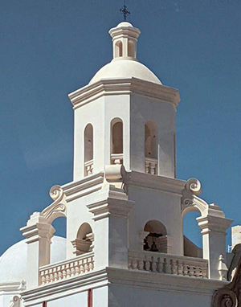
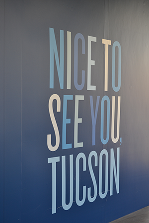

Tucson, Arizona
Chamber of Commerce
Today's Weather:


Tucson, Arizona
Located in the Sonoran Desert of the Southwestern United States, Tucson is full of history and interesting places to see. Take a look below to learn more about our city!
Our History
The history of Tucson, Arizona began thousands of years ago. Paleo-Indians practiced plant husbandry and hunted game in the Santa Cruz River Valley from 10,000 B.C. or earlier. Archaic peoples began making irrigation canals, some of the first in North America, around 1,200 B.C. The Hohokam people lived in the Tucson area from around 450-1450 A.D, in a complex agricultural society.
Jesuit missionary Eusebio Francisco Kino founded the Mission San Xavier del Bac in 1700. Through the 1700s, Spanish missionaries tried to get the Native Americans to convert to Catholicism and a Spanish lifestyle. The Spanish built a fort at Tubac in 1751. It was moved to Tucson in 1775 where Hugo O'Conor, an Irishman working for the Spanish crown, officially founded Presidio San Augustin del Tucson.
The Spanish stayed in the area, fighting down repeated attacks on the fort by Apache warriors. In 1821, Tucson becomes part of the new state of Sonora in Mexico, who had won independence from Spain. In 1854, Tucson, along with much of the surrounding area, was purchased from Mexico by the United States in the Gadsden Purchase and was made part of the New Mexico Territory. President Lincoln created the Arizona Territory in 1863, and Tucson was named capitol from 1867 to 1877. On February 14, 1912, Arizona became the 48th state in the United States.
Source: Wikipedia article - History of Tucson, Arizona
Tucson Events
These are a few of the exciting events that happen in Tucson every year, please feel free to join the fun!
Tucson Festival of Books
Every March the University of Arizona hosts the Tucson Festival of Books. This event usually occurs during Spring Break, so many of the students have left the campus. Every year the festival boasts of several accomplished authors visiting from around the world.
Tucson Gem, Meneral and Fossil Showcase
Every February, with daytime highs in the perfect mid-60s to low-70s, the Old Pueblo becomes home to biggest gem and mineral show in the U.S.A. — the Tucson Gem, Mineral & Fossil Showcase — with dozens of gem shows throughout the city, drawing hundreds of thousands of collectors, jewelers, manufacturers, dealers and visitors from around the world. Some of these gem shows open again in September for a long weekend after Labor Day during the Tucson Fall Gem Show.
The Colorguard Classic
Watch legends of men's pro golf strut their stuff on the Catalina Course at Omni Tucson National Golf Resort in scenic Oro Valley. This longtime PGA TOUR tournament host exudes a tradition of excellence and is laid out so fans can see the competition up-close. At the entertaining and engaging Jose Cuervo Pro-Am, on Wednesday-Thursday, amateur players walk the course shoulder-to-shoulder with the superstars.
Source: visittucson.org